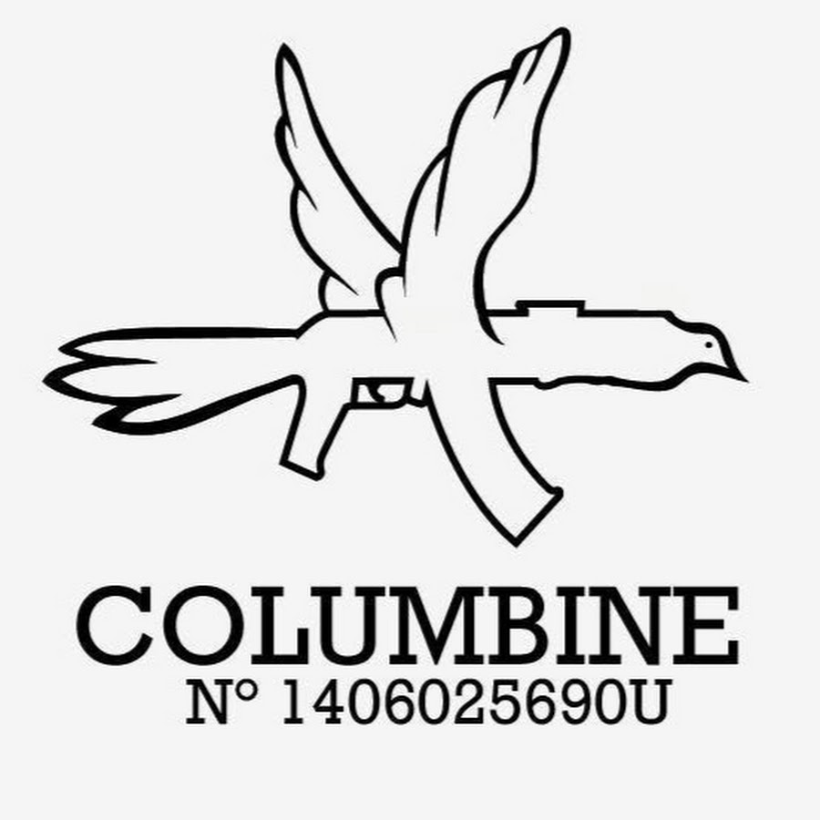
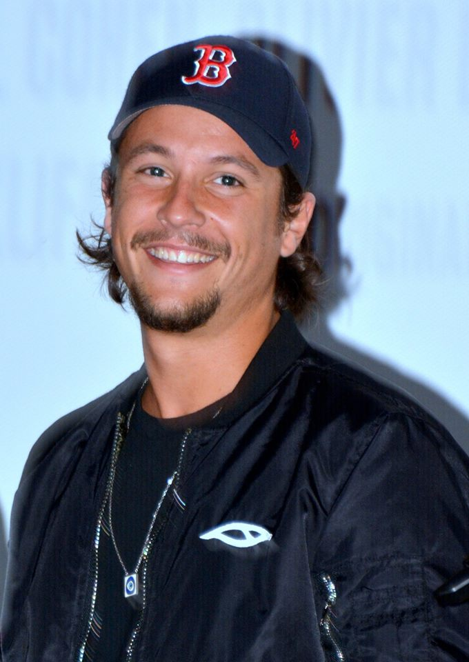
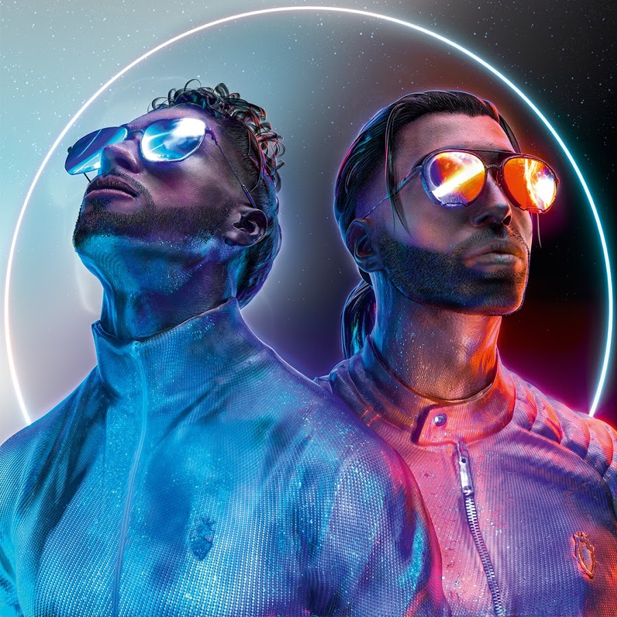
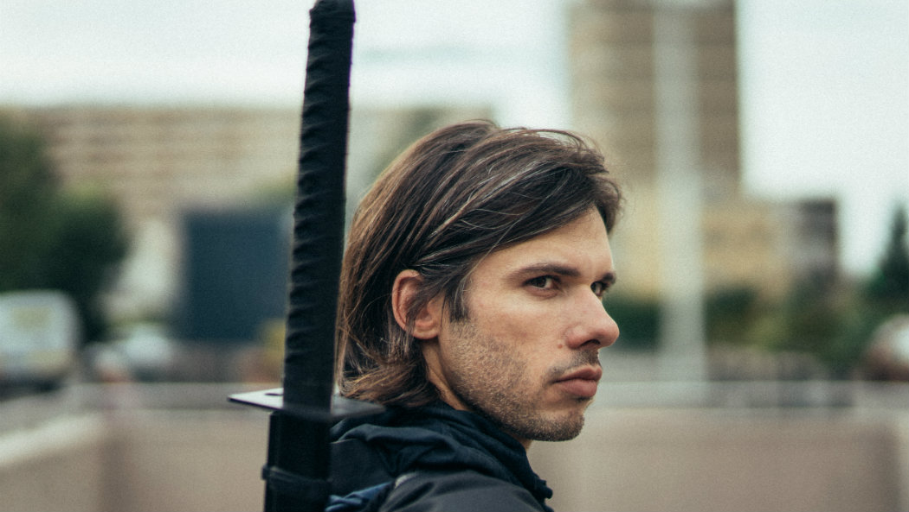

Le rap est un mouvement culturel et musical soutenant un chant aux paroles, improvisées ou non, scandées
sur un rythme très martelé,
il prend ses racines du hip-hop, ayant émergé au début des années 1970 dans les ghettos aux États-Unis.
En 1979, "Rapper's Delight" de Sugarhill Gang devient le premier tube rap dans le monde et notamment en
France où le mouvement hip-hop touche la jeunesse des cités.
Le premier tube de rap, Rapper's Delight de Sugarhill Gang.
On distingue principalement 2 types de rap: le rap français et le rap américain.
Comme son nom l'indique, il s'agit du rap français. A la fin des années 80, celui-ci arrive avec les
premiers freestyles de NTM, Assassin et MC Solaar.
Voici quelques exemples de rappeurs les plus populaires aujourd'hui.
Columbine

collectif de rap français formé en 2014, originaire de la banlieu de Rennes, leur troisième
album Adieu bientôt a été certifié disque de platine.
Leur titres les plus connus sont pierre, feuille, papier, ciseau; c'est pas grave, adieu
bientôt, les prélis.
Nekfeu

Membre du groupe S-Crew et 1995, il appartient au collectif l'Entourage et a également fait
partie de 5 Majeur.
Son dernier album, les étoiles vagabondes, est certifié triple disque de platine. Ses
principaux
titres sont princesse, on verra, ma dope.
PNL

sigle de Peace N’ Lovés, est un groupe de rap français indépendant, composé de deux frères,
Ademo et N.O.S (de leurs vrais noms Tarik et Nabil Andrieu),
originaires de la cité des Tarterêts à Corbeil-Essonnes.
Leur single "au DD" a accumulé plus de 12 millions de vues en moins de 48h. Celui-ci compte
aujourd'hui plus de 123 millions de vues.
Mi-août 2019, l'album "deux frères" devient triple disque de platine avec plus de 300 000
ventes.
Le clip "au DD", au détail, qui fait référence à la vente de cannabis découpé en petite
quantité.
Orelsan

Membre des Casseurs-Flowteurs avec son ami Gringe, voix française de Saitama du manga One
Punch
Man, il revient à la musique en 2017 avec le titre "basique",
avant de sortir l'album la fête est finie, certifié disque de diamant. Le rappeur a remporté
trois Victoires de la musique.
Ses titres les plus populaires sont paradis, défaite de famille et mes grands-parents.
Rap US
Il s'agit du rap américain, qui s'exporte beaucoup dans les autres pays, notamment en France.
Le rappeur le plus connu aujourd'hui, Eminem, est originaire de Détroit. Il crée souvent la
polémique à cause de certains de ses titres, comme the Real Slim Shady issu de l'album The Slim
Shady LP.
Ce disque intemporel a permis au monde de découvrir celui qui allait devenir très vite l’icône de
toute une génération : Eminem.
Grossier, vulgaire, mais à la fois diaboliquement drôle, il s'agit du premier single du rappeur à se
classer premier dans les charts,
11ème le plus vendu aux Etats-Unis en 2000 (et 4ème au Billboard Hot 100).
Plus récemment, l'artiste a affirmé son engagement politique durant la campagne présidentielle
américaine de 2016.
Véritable charge anti-Donald Trump, celui-ci a sorti un freestyle dans un parking de Detroit, sa
ville natale. Il conclut par un message très clair :
«Je dessine une ligne dans le sable : soit vous êtes pour, soit vous êtes contre.
Si vous ne pouvez pas choisir qui vous préférez et que vous êtes divisés sur la personne à soutenir,
je vais le faire pour vous : "Allez-vous faire *** !" » .
Ses principaux titres sont Lose yourself, Stan, Mockingbird, Without me, Rap God.
Il existe de nombreux autres rappeurs américains connus, comme Kanye West, Fat Joe, Asap Rocky,
XXXTentacion, Jay Z, Snoop Dog, Dr Dre et beaucoup d'autres.